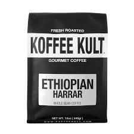

KOFFEE KULT
- Koffee Kult sources coffee beans from over 50 countries, including Kenya, Ethiopia, Brazil, Mexico, and Burundi. They roast Arabica beans from some of the world's largest organic farms.
- some tips for using Koffee Kult coffee:
- Grind: Use one tablespoon of coffee per 4–6 ounces of water.
- Water: Use filtered water if possible.
- Brewing method: Koffee Kult coffee can be used in many brewing methods, including espresso machines, french presses, drip, pour over, and cold brew.
- Caffeine content: An 8 ounce cup of Koffee Kult drip coffee contains 95 milligrams of caffeine, while an 8 ounce cup of drip decaf coffee contains 2 milligrams. A 1 ounce shot of Koffee Kult espresso contains 64 milligrams of caffeine.